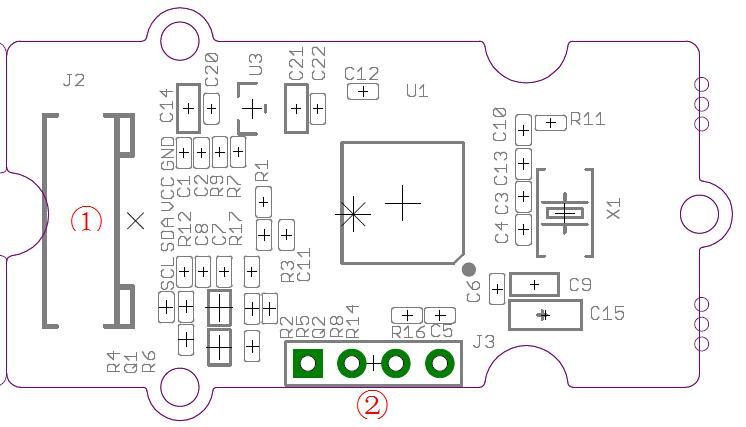
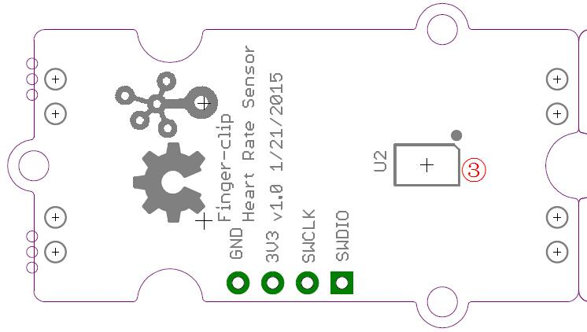
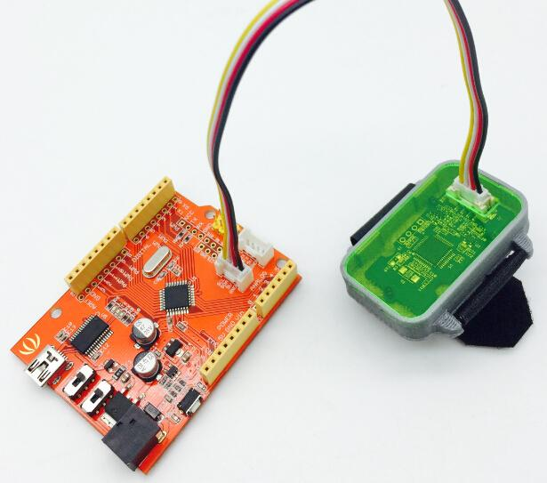
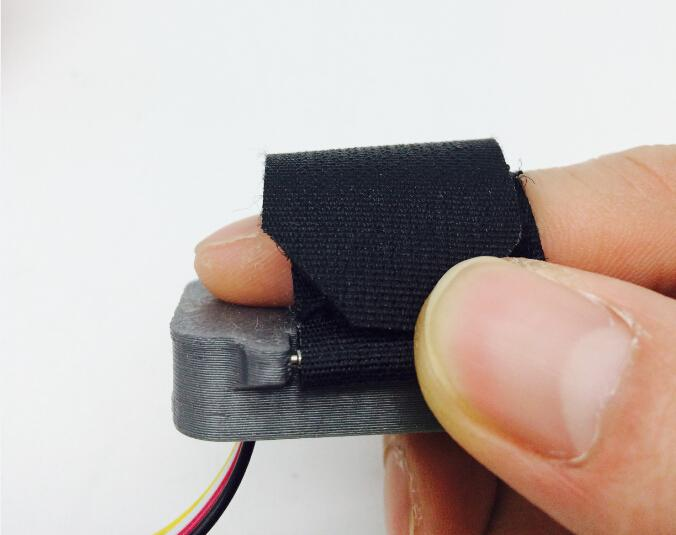
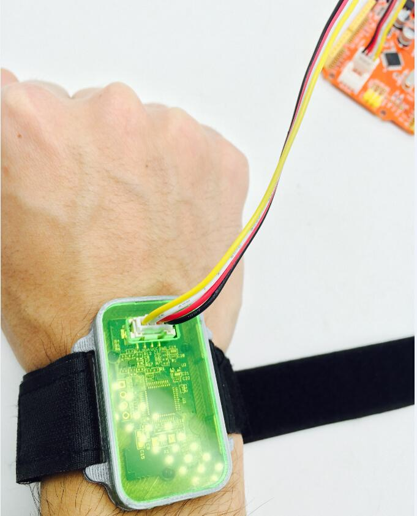
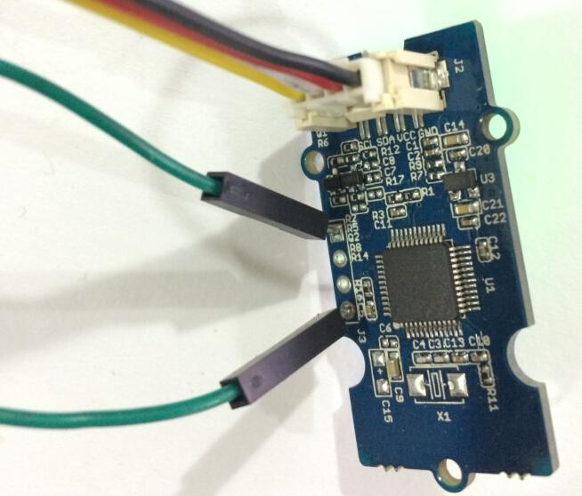

Grove - Finger-clip Heart Rate Sensor with shell is based on PAH8001EI-2G, a high performance and low power CMOS-process optical sensor with Green LED and DSP integrated serving as a Heart Rate Detection (HRD) sensor.This module is based on optical technology which measures the variation human blood movement in the vessel. Low power consumption and flexible power saving mode make it suitable for wearable device. Cause the heart rate sensor chip need high processing speed for the algorithm of heart rate data, this module integrate a STM32, reserved SWD interface allow users to reprogram the STM32. This module equips a shell and two bands that allow users to fix the module on finger, wrist or arm easily.
 
Here, We will provide an example here to show you how to use this sensor.
Link the Sensor to I2C port of Seeeduino with Grove Cable.

When using the band to fix this module on your finger or wrist, please keep the sensor area contact the skin well and keep no motion, just like the picture.


Copy the following code into a new sketch of Arduino and upload the sketch, then you can get heart rate from the Serial Monitor. It may take about a minute to get valid heart rate after you touch your finger with sensor.
#include <Wire.h>
void setup() {
Serial.begin(9600);
Serial.println("heart rate sensor:");
Wire.begin();
}
void loop() {
Wire.requestFrom(0xA0 >> 1, 1); // request 1 bytes from slave device
while(Wire.available()) { // slave may send less than requested
unsigned char c = Wire.read(); // receive heart rate value (a byte)
Serial.println(c, DEC); // print heart rate value
}
delay(500);
}
Read a byte from I2C device 0xA0 (8 bit address), it's the heart rate.
#include "mbed.h"
I2C i2c(I2C_SDA, I2C_SCL);
const int addr = 0xA0;
int main() {
char heart_rate;
while (1) {
i2c.read(addr, &heart_rate, 1);
printf("heart rate: = %d\r\n", heart_rate);
}
}
We can upgrade the firmware of the heart rate sensor through its bootloader.

VCC - VCC
GND - GND
SDA - TX
SCL - RX
NOTE: The Grove - Finger-clip Heart Rate Sensor provides heart rate measurements. However, it is not a medical device. To use the heart rate detection sensor on your wrist, finger or palm, you must:
(1)Fasten the sensor snugly makes tight contact with your skin and maintain table (no motion) while measuring to acquire accurate heart rate. If the sensor does not contact the skin well or have extreme motion while measuring that the heart rate will not be measured correctly. (2)Sensor's performance is optimized with greater blood flow. On cold days or users have poor circulation(ex: cold hands, fingers and cold feet) the sensor performance (heart rate accuracy)can be impacted because of lower blood flow in the measuring position.